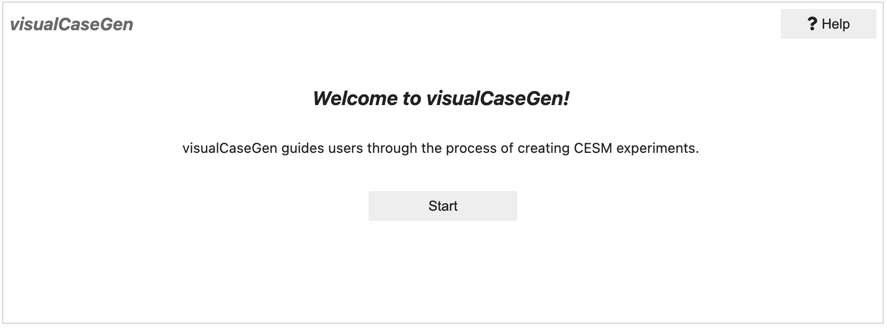

Opening the GUI
Once the conda environment is installed, you can launch visualCaseGen by opening the GUI.ipynb notebook in the visualCaseGen/ directory. Below are several common methods for launching the notebook. If you are using NCAR machines, the JupyterHub interface is recommended.
From the Command Line
Warning
The command-line launch is possible only if you’re running on a local machine or have SSH tunneling enabled. For remote access, set up SSH tunneling (described in the next section).
Ensure the visualCaseGen Conda environment is activated. If not, activate it with:
conda activate visualCaseGen
Launch the notebook from the command line by navigating to the visualCaseGen/ directory where GUI.ipynb notebook is located and running:
jupyter-lab GUI.ipynb
This will open the Jupyter notebook in your default web browser, displaying a cell with the following code:
from visualCaseGen import gui; gui
To start the GUI, execute the cell by clicking the Run button or pressing Shift + Enter. You should see the following welcome dialog. Click Start to begin using the GUI:
Once the Start button is clicked, a loadbar will appear, indicating that the GUI is initializing. When the GUI is ready, the main interface will be displayed. If the loadbar hangs, click the Help button on the top right corner of the welcome dialog to see if any error messages are displayed. If you encounter any issues, please refer to the Troubleshooting section of this documentation.
On a Remote Machine
To access the GUI on a remote machine, set up SSH tunneling with port forwarding.
Establish an SSH connection with port forwarding (the exact command may vary depending on your system):
ssh -L 8888:localhost:8888 username@remote_host
After connecting, activate the visualCaseGen Conda environment, navigate to the visualCaseGen/ directory, and run:
conda activate visualCaseGen
cd [PATH_TO_visualCaseGen] # e.g., ~/cesm3_0_beta03_gui/visualCaseGen
jupyter-lab GUI.ipynb --no-browser
If the above steps are successful, the command line will display a URL that you can copy and paste into your web browser to access the Jupyter notebook. The URL will look similar to:
http://localhost:8888/lab/?token=1234567890abcdef1234567890abcdef1234567890abcdef
Paste the url shown in your own terminal into your web browser to access the visualCaseGen GUI. A Jupyter notebook with the following cell will be displayed:
from visualCaseGen import gui; gui
To start the GUI, execute the cell by clicking the Run button or pressing Shift + Enter. You should see the following welcome dialog. Click Start to begin using the GUI:
Once the Start button is clicked, a loadbar will appear, indicating that the GUI is initializing. When the GUI is ready, the main interface will be displayed. If the loadbar hangs, click the Help button on the top right corner of the welcome dialog to see if any error messages are displayed. If you encounter any issues, please refer to the Troubleshooting section of this documentation.
NCAR JupyterHub
Warning
This method is available only to users with access to NCAR systems like derecho or casper.
Go to NCAR JupyterHub in your web browser:
https://jupyterhub.hpc.ucar.edu/
Log in by selecting “Production” under “Available NCAR Resources,” then enter your NCAR credentials.
Start a JupyterHub server by clicking the “start” button under the Actions column.
When prompted, select a resource. Although any resource is acceptable, “Casper Login” is recommended, as visualCaseGen does not require significant computational power.
After the resource starts, navigate to the visualCaseGen/ directory from the File Browser tab on the left.
Tip
Create a symbolic link to your CESM directory in your home directory for easier access.
Open the GUI.ipynb notebook by double clicking on it,
When prompted, select the visualCaseGen Conda kernel from the dropdown menu. (If not prompted, select the kernel by clicking the kernel name in the top right corner of the notebook.)
To start the GUI, execute the first cell (with from visualCaseGen import gui; gui) by clicking the Run button or pressing Shift + Enter. You should see the following welcome dialog. Click Start to begin using the GUI:
Once the Start button is clicked, a loadbar will appear, indicating that the GUI is initializing. When the GUI is ready, the main interface will be displayed. If the loadbar hangs, click the Help button on the top right corner of the welcome dialog to see if any error messages are displayed. If you encounter any issues, please refer to the Troubleshooting section of this documentation.